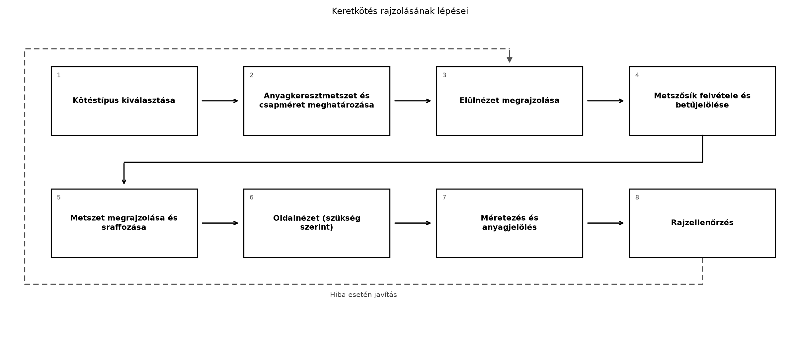

Egy ajtókeretet kell lerajzolni a műhelyben, mielőtt a gyalult léceket szétosztanánk. A vízszintes és függőleges elemek találkozásánál látnod kell, hogy a csap pontosan hol ül, mekkora a váll, és mennyire mélyen nyúlik a csaplyukba. Ha a rajzon nem egyértelmű a kötés, a gépi csapozáskor rossz beállítást kapsz, és az ajtó szétszedés nélkül remeg vagy elcsavarodik. Ugyanez igaz egy asztalkávára: a sarokkötés rajzán múlik, hogy a káva elég merev lesz-e, és hogy a csap marad-e rejtve.
Képzeld el egy hagyományos, tömörfenyőből készülő ajtókeretet: két függőleges álló keretléc (röviden álló) és két vízszintes keresztléc (fejléc) (ellenőrizendő: szakrajzi tankönyvi terminológia). A sarkokon a vízszintes elem végén egy négyszögletes nyelv, a csap nyúlik be a függőleges elembe mart fészekbe, a csaplyukba. A rajzon az előlnézeten a csapot nem látod, csak a vállakat; az oldalnézeten a csap vastagsága látszik; a metszeten pedig a csap behatolását és a ragasztási hézagot is meg tudod mutatni. Rajz nélkül ez a kapcsolat csak elképzelés, mérés nélkül pedig hibás megmunkálás.
A keret olyan asztalosipari szerkezet, amelyben általában négy (vagy több) egyenes, faalapú elem zár be derékszögű vagy ferde sarkot. A keret lehet üres (például képkeret) vagy betétes (például ajtókeret betétpanellel). A kötések ábrázolásakor a rajznak meg kell mutatnia a kapcsolat geometriáját, a csap és a fészek illeszkedését, és a megmunkáláshoz szükséges méreteket.
Definíció. A keretkötés két, általában derékszögben találkozó keretelem olyan ragasztott vagy bontható kapcsolata, amely a külső terhelést a csap, a lapolás vagy az aljazás útján adja át. Sarokkötés a keret sarkán létesülő kapcsolat; T-kötés a keretben egy betét oszlop vagy középső léc csatlakozik egy folytonos elemhez; keresztkötés két, egymást keresztező elem kapcsolata.
Szabály. A faipari szakrajzon a tömörfa és lapanyag anyagjelölését a hatályos rajzszabványok szerint, de a hazai faipari gyakorlatnak megfelelően kell alkalmazni. A metszetekben a faanyagot az anyagjelző sraffozással, a rostirányt és a ragasztási hézagot vékony, folytonos vonallal jelöljük. A csap és a csaplyuk metszetben látható illeszkedését úgy rajzoljuk, hogy a csap körvonala folyamatos vastag vonal, a ragasztóréteget elhanyagoljuk. Az érintkező csap–fészek oldalfelületeket egyetlen folytonos vonallal rajzoljuk; a szándékos hézagot (pl. 1–2 mm fenékhézag) két külön kontúrral, szükség esetén nagyított részlettel mutatjuk meg (ellenőrizendő: MSZ EN ISO 128 vonatkozó része).
Ábrázolási konvenció. A rajzon a méreteket mm-ben adjuk meg, mértékegység nélkül. A felvett nézetek: elülnézet (a keret síkjából szemből), oldalnézet (a keret élének irányából), és legalább egy metszet. A metszősík haladhat pontosan a csap középsíkján (vízszintes metszet), hogy megmutassa a csap hosszát és a fészek mélységét, vagy a csap vastagsági síkjában (függőleges metszet), hogy a csap vastagságát és a fészek szélességét szemléltesse. A metszetjelölésnél a metszősík nyomvonalát szabványos szaggatott pontvonallal és nyíllal jelöljük, a metszetet pedig nagybetűvel.
A keretsarok legegyszerűbb és gyakori kötéseit nézetben és metszetben mutatjuk be. A rajzokon az anyag vastagságát , szélességét jelöli. A csap vastagságát jelöli, a csap hosszát , a váll szélességét .
Az ábra a következő rajzok térbeli képét adja: ha egy nézet vagy metszet nem világos, keresd meg mellette a kötés szétszedett képét. A HTML-változatban a kötés kiválasztható, csúszkával szétszedhető és 90°-onként forgatható.
Az egyik elem végét ellapoljuk, a másik elem végére ráfektetjük. A kapcsolat csak ragasztással és csavarral vagy tiplivel teherbíró. Az elülnézeten a felső elem széle takarja az alsó elem végét; a metszeten az alsó elem anyaga folyamatos, a felső elem levékonyított része látszik. A rajzon megadjuk a lapolás hosszát (általában a teljes szélesség ) és vastagságát (általában a fél anyagvastagság, ).
A lapolás hossza nem a teljes szélesség, hanem az elemek szélességének egy része, és a felső elem vállal ütközik az alsó elem homlokához. Ez a vállazott lapolás jobb esztétikát és merevebb kötést ad. A rajzon az elülnézetnél az alsó elem felső éle azonos síkban van a felső elem külső élével; a lapolás hossza a váll mögött mérhető. A metszetben a vállat és az aljazott részt is feltüntetjük.
Az ollós csap (műhelyi nevén nyitott csap) olyan sarokkötés, ahol a csapot nem fészekbe dugjuk, hanem a két elem az anyag vastagságának egy részét átfedi, a csap pedig az egyik elem oldalából kinyúlik, a másik elembe mart horonyba csúszik. A rajzon a csap vastagsága általában egyharmada az anyagvastagságnak, a csap hossza megegyezik az elem szélességével. Az elülnézeten a csap élét nem látjuk, mert a homlokfelület takar; az oldalnézeten a csap oldala és a horony illeszkedése látszik. A metszet a csap középsíkjában mutatja a csapot és a hornyot.
A vésett csap (műhelyi néven zárt csap) a legjellemzőbb keretsarokkötés. Az egyik elem végén csapot, a másik elemen zárt fészket (csaplyukat) munkálunk meg. A csap és a fészek mérete úgy illeszkedik, hogy a csap hossza kissé rövidebb legyen a fészek mélységénél (általában 1–2 mm hézag), a csap vastagsága pedig a fészek szélességével azonos legyen (szoros, kézzel még összetolható illesztés; a tűrést a rajzon adjuk meg; tájékoztató, ellenőrizendő: szakkönyv). A vastagabb csap préseléskor szétfeszíti a fészket. A rajzon az elülnézet a vállakat és a felső elem homlokát mutatja, a fészek nem látható. Az oldalnézet a csap vastagságát és a fészek két falát mutatja. A metszetben (a csap középsíkján átmetszve) a csap teljes hosszát, a fészek mélységét és a fenékhézagot láthatjuk.
Szabály. A csap arányaira tájékoztató szabály: a csapvastagság körülbelül az anyagvastagság egyharmada (), de soha ne legyen 6 mm-nél kisebb, és 25 mm-nél nagyobb anyagvastagság esetén is arányosan, a szabványos marószerszám-méretekhez igazítva válasszuk (ellenőrizendő: gépkönyv és szerszámkatalógus). A csap hossza a fészek mélységének megfelelő: ha a keretelem szélessége , akkor a fészek mélysége általában a szélesség kétharmada, így a csap hossza ennél kb. 1–2 mm-rel kisebb.
Az aljazás a csap keretnyílás felőli (belső) sávjának elvékonyított kimunkálása, így a csapnak csak egy sávja teljes vastagságú. Az 1/3 aljazás, illetve a 2/3 aljazás az aljazott sáv arányát adja meg a csap szélességéhez képest (ellenőrizendő: szakrajzi tankönyv; a pontos értelmezést a Ollós csapozás: 90°-os illesztés, 1/3 és 2/3 aljazás alfejezettel és a Fogalomtárral egyeztetve használd). Az aljazás nem azonos a csap vastagsági helyzetével: a csap helyzetét külön méretezzük („a csap a belső oldaltól x mm-re”), és minden helyzetméretnél ellenőrizzük, hogy belső távolság + csapvastagság + külső távolság = v. A rajzon az aljazást az elülnézeten a váll vonalának eltolásával, a metszeten a csap kimunkált sávjával mutatjuk meg. Mindig megadjuk az aljazás méretét: például „aljazás 10 mm a belső oldaltól”.
Az árkolt sarokkötés olyan, ahol a keretelem sarkaiban nem lapolás vagy csap, hanem egy teljes hosszon futó horony (árkolás) kapcsolja a két elemet. Ezt ritkán használjuk sarokkötésként, inkább T- és keresztkötésekhez. A rajzon az árkot a metszeten mutatjuk be, a horony szélessége és mélysége megadásával. A sarokkötésnél az árkolás általában egyesített, azaz az egyik elemen horony, a másik elemen a horonyba illeszkedő csap fut.
A keretben a középső oszlop (keresztléc) és a keret folytonos eleme között T-kötés jön létre; ha két elem egymást keresztezi, keresztkötésről beszélünk.
Az egyik elem végét fél anyagvastagságban ellapoljuk, és a folytonos elem fél vastagságába mart horonyba fektetjük. Az elülnézeten a folytonos elem takarja a lapolt végét; a metszeten a lapolás illeszkedése látszik. A rajzon megadjuk a lapolás hosszát (általában a folytonos elem szélességével azonos) és a horonyszélességet (a lelapolt elem vastagságával azonos). A kapcsolat ragasztással készül.
A vízszintes vagy keresztező elem végére csapot, a folytonos elembe fészket munkálunk. A csap lehet átmenő vagy vak, de keretben általában vak fészket használunk, hogy a fészek ne látszódjon a külső oldalon. A rajzon az elülnézet a vállat és a folytonos elem homlokát mutatja; a metszet a csap hosszát és a fészek mélységét. A T-csapnál a csap hossza a folytonos elem szélességének kb. kétharmada (tájékoztató érték).
Ha a T-kötés csapos, gyakran aljazzuk a csapot, hogy a fészek ne hatoljon át a folytonos elem külső oldalán. Az aljazott T-csap rajzán a fészket folytonos vonallal rajzoljuk a belső oldalon, a külső oldalon pedig a csap nem látható. A metszet mutatja meg, hogy a fészek mélysége kisebb, mint az anyag szélessége.
A T-kötés legegyszerűbb formája az árokhorony: a folytonos elemben hornyot munkálunk, a betételem végét a horonyba toljuk. Ez önmagában nem mindig teherbíró, ezért gyakran egy bemaró csappal vagy tiplivel erősítjük. A rajzon a horony szélessége megegyezik a betételem vastagságával, mélysége 8–12 mm (tájékoztató, anyagfüggő). Az elülnézeten a horony széle vékony vonallal jelenik meg, ha takarásban van, a metszeten a horony teljes keresztmetszete látható.
A keresztkötés két elem azonos síkban történő, fél anyagvastagságban egymásra lapolt kapcsolata. A két elem egymást keresztezi, és mindkettőn fele-fele mélységű horony vagy lapolás van. A rajzon az elülnézet a két elem keresztezését mutatja; a metszet (általában a kereszteződésben, az elemek közös középsíkjában) a fél-fél vastagságú kivágást mutatja. A kapcsolatot gyakran csak ragasztás tartja, ezért a rajzon a ragasztási illesztést folytonos vékony vonallal jelezzük.
A rajz készítésekor a csap méreteit nem szabad önkényesen megválasztani. A következő arányok a faipari gyakorlatban bevett kiinduló értékek, de mindig ellenőrizendők a gép- és szerszámkatalógus alapján (tájékoztató adatok).
| Jellemző | Jel | Tájékoztató arány / érték | Megjegyzés |
|---|---|---|---|
| Csapvastagság | legalább 6 mm, tömörfa ajtókeretnél 8–12 mm | ||
| Csapszélesség | a keretelem szélessége, levonva a vállakat/aljazást (pl. 60 mm-es elemnél 40 mm) | oldalt 10–10 mm váll | |
| Csaphossz (vak fészekhez) | a fészek mélységénél 1–2 mm-rel rövidebb | ||
| Váll szélessége oldalt | a csap vastagságához képest egyenlő vagy annál nagyobb | a váll mindkét oldalon legalább 5–8 mm | |
| Aljazás | – | 1/3 vagy 2/3 (az aljazott sáv aránya) | a belső oldal felől mérve (ellenőrizendő) |
A csapvastagság nem haladhatja meg az anyagvastagság egyharmadát, mert a fészek két oldalán maradó fal túl vékony lesz, és a keret megreped. Ha viszont túl vékony a csap, a kötés nyírási szilárdsága alacsony. Ezért a rajzon mindig megadjuk a csapvastagságot és az aljazás mértékét.
Az alábbi, számozott rajzolási sorrend a keretkötés ábrázolását tanítja. Az egyes lépések ellenőrzési pontjai a helyes méretezést és a tiszta, szabványos ábrázolást garantálják.
Az alábbi folyamatábra a keretkötés rajzolásának lépéseit mutatja be.

Készítsük el egy betétes ajtókeret sarkának rajzát, amelyen a vízszintes keresztléc vésett csappal csatlakozik a függőleges álló keretléchez. A keret anyaga 60 mm széles, 25 mm vastag tömör tölgyfa; a betéthorony 10 mm széles, 8 mm mély, a keret belső oldalán fut.
Adatok. Csapvastagság (kb. mm); a csap a vastagság közepén ül: mm. Csapszélesség 40 mm, oldalt 10–10 mm váll ( mm). Fészekmélység 40 mm (), csaphossz 38 mm, így a fenékhézag 2 mm.
Rajzleírás (elülnézet, A–A metszet, oldalnézet).
Elülnézet (a keret síkjából szemből): A függőleges álló folytonos, 60 mm széles. A keresztléc 60 mm széles; végén a 10–10 mm-es vállak az álló belső élére ütköznek. A csap és a fészek zárt, ezért nem látszik; a belső élen a betéthoronyt szaggatott vonallal jelöljük.
Metszet (A–A): A metszősík a csap vízszintes középsíkján halad, felülnézetben. A metszeten a fészek 40 mm mély és 8 mm széles, a csap 38 mm hosszú és 8 mm vastag; a fenékhézag 2 mm, ezt nagyítva, két külön kontúrral rajzoljuk. A csapot és a környező faanyagot a rostiránynak megfelelően sraffozzuk; a csapnak a keresztléc anyagával folytonosnak kell lennie. A betéthorony nem esik a metszősíkba, ezért a metszeten nem látszik.
Oldalnézet (a keret éléből nézve): A keret 25 mm vastag. A csap 8 mm vastag, a belső oldaltól 8,5 mm-re, a külső oldaltól szintén 8,5 mm-re van (8,5 + 8 + 8,5 = 25). A belső oldalon a betéthorony 10 mm széles, 8 mm mély, folytonos vonallal látszik.
A HTML-változat a rajzolási eljárás hét lépését (kötéstípus → elülnézet → metszősík → metszet → felülnézet → méretezés → ellenőrzés) lépteti, és robbantott axonometriát is mutat.
A faipari rajzokra vonatkozó európai és magyar szabványok követelményeit csak ellenőrzött forrásból szabad átvenni. A keretkötések ábrázolásakor a következő, a hazai gyakorlatban irányadó szabványok alkalmazhatók (a pontos számok és a hatályos verzió ellenőrizendő): MSZ EN ISO 128 (műszaki rajzok általános alapelvei), MSZ EN ISO 129 (méretmegadás), MSZ EN ISO 5455 (méretarányok), MSZ EN ISO 7200 (rajzfej). A faanyag metszeti jelölésére a hazai szakrajzi gyakorlat szerint a tömörfa metszetét a rostiránnyal párhuzamos, hullámos vagy egyenes sraffozással jelöljük; a furnérozott lap és az agglomerált lap jelölése eltérő, ahogy a Anyagjelölések és metszetsraffozás a faipari rajzon fejezetben tárgyaljuk.
A kész rajzot a következő szempontok szerint ellenőrizzük:
Eltérésnél a rajzot javítani kell, és a gyártás előtt a műhelyben újra egyeztetni a gépkezelővel.
Egy asztalos műhelyben egy ügyfél tölgyfa asztalkávát rendel, 1200 × 700 mm-es, 40 mm vastag kávákkal. Az asztalos felvázolja a sarokkötés rajzát: vésett csap, 1/3 aljazással a belső oldalra. A rajzon megadja a csapvastagságot 12 mm-nek, a fészekmélységet 40 mm-nek, a csap hosszát 38 mm-nek. A rajz alapján a gépkezelő beállítja a csapozó marógépet. A próbadarabon kiderül, hogy a csap vastagsága 12,2 mm lett, a fészek pedig 12,0 mm, mert a rajzon a tűrés nem volt megadva. A préselésnél a csap felfeszítette a fészket, és a káva megrepedt. A tanulság: a rajzon a szoros illesztésű csap–fészek kapcsolatnál mindig meg kell adni a tűrést vagy a ráhagyás mértékét (például „csap 12,0 mm, fészek 12,1 mm, préselés előtt a csap csiszolható”), és a gépbeállítás után mindig próbadarabot kell készíteni. (Ez a valós eset minta, nem konkrét bírósági vagy kártérítési adat.)
Válaszok: lásd a Megoldások elején.
1. feladat (A)
Írd le, mit jelent az „1/3 aljazás” a vésett csapos sarokkötés rajzán,
és add meg a csapvastagságot 24 mm-es anyagvastagságnál.
2. feladat (A)
Sorold fel legalább három sarokkötést, amelyet a keret sarkában
használhatunk, és mindegyiknél mondd el, mi a jellemzője a rajzon.
3. feladat (B)
Készíts pontos szöveges rajzleírást egy T-kötésről (függőleges álló
keretléc 70 mm széles, 30 mm vastag; vízszintes betétléc 40 mm széles,
20 mm vastag; csapos T-kötés, a csap a vízszintes elem végén, vak fészek
az álló keretlécben). Add meg a nézeten és a metszeten látható elemeket,
méreteket, anyagjelölést.
4. feladat (B)
Egy keretsarok rajzán a következő méretek szerepelnek: anyagvastagság 30
mm, csapvastagság 12 mm, csaphossz 30 mm, fészekmélység 30 mm.
Ellenőrizd a csap arányát, és írd meg, mi a probléma, ha van.
5. feladat (C)
Tervezzünk egy betétes ajtókeret sarkát 70 mm széles, 28 mm vastag
keretlécekkel. Válassz kötéstípust, indokold a választást, és vázold fel
a rajz szerkezetét (melyik nézeten mit látsz, milyen metszetet veszel
fel, milyen méreteket adsz meg). A rajzot nem kell ténylegesen
megrajzolnod, csak pontosan leírnod.
6. feladat (D)
A műhelyben a keretkötésről készült rajzon az oldalnézet hiányzik, és az
aljazás mértéke nincs megadva. A gépkezelő nem tudja beállítani a
marógépet. Írd le, hogyan pótolnád a hiányzó rajzelemet lépésről
lépésre, és mit mérnél meg a rajzon, mielőtt nekiállsz.
Önellenőrzés – válaszok:
1. Igaz; az érintkező oldalfelületeket egy vonallal rajzoljuk, a
szándékos hézagot (fenékhézag) külön kontúrral, szükség esetén nagyítva
mutatjuk meg.
2.
,
.
3. A csap hosszát és a fészek mélységét a csap középsíkján átmenő
metszeten látjuk.
4. A csap hossza egyenlő a fészek mélységével, ezért hiányzik a
fenékhézag; a vállak hiánya pedig a csap szélességének hibás
méretezésére utal.
5. Az aljazott vésett csap jobb, mert rejtve marad, a keret merevebb, és
a betét horony nem gyengíti a fészket.
1. feladat (A)
Az aljazás a csap keretnyílás felőli sávjának elvékonyított kimunkálása;
az 1/3 az aljazott sáv arányát jelöli (ellenőrizendő: szakrajzi
tankönyv). A csapvastagság 24 mm anyagvastagságnál
.
A csap vastagsági helyzetét külön méretezzük: pl. középen
mindkét oldalról, ellenőrzés:
mm.
2. feladat (A)
Három sarokkötés: (a) rálapolás aljazás nélkül – az
elülnézeten a takarásban lévő elem végét nem látjuk, a metszeten a fél
anyagvastagságú lapolás látszik; (b) ollós csap – az
elülnézeten a csap nem látható, az oldalnézeten a csap és a horony
illeszkedik, a metszeten a csap középsíkjában látható; (c)
vésett csap aljazással – az elülnézeten a vállak, a
metszeten a csap hossza és a fészek, az oldalnézeten a csap vastagsága
és az aljazás helye.
3. feladat (B)
Rajzleírás:
Elülnézet (az álló keretléc síkjából): A függőleges álló
keretléc 70 mm széles, 30 mm vastag. A vízszintes betétléc 40 mm széles,
20 mm vastag, jobbról csatlakozik az álló keretlécéhez. A betétléc
vállal ütközik, a csap vastagsága 7 mm (≈ 20/3; a szerszámhoz igazítva 6
vagy 8 mm, ellenőrizendő), a léc vastagságának közepén, két oldalán 6,5
mm váll, a csap szélessége 20 mm (a betétléc középső része, oldalt 10 mm
váll mindkét oldalon). A fészek az álló keretlécen belül van, a külső
oldalon nem látható.
Vízszintes metszet (A–A a csap középsíkján): Az álló keretléc
keresztmetszete, a fészek mélysége 45 mm (a 70 mm szélesség kb. 2/3-a),
a csap hossza 43 mm, a fenékhézag 2 mm. A betétléc csapja a fészekben
ül, a váll az álló keretléc oldalához simul.
Oldalnézet: Az álló keretléc 30 mm vastag, a betétléc 20 mm
vastag. A csap 7 mm vastag, a betétléc középvonalában helyezkedik el. A
fészek az álló keretlécen belül, 7 mm széles.
Anyagjelölés: tömör fenyő, rostirány a vízszintes elemeken balról
jobbra, az álló keretlécen függőlegesen.
Méretek mm-ben: álló keretléc 70 × 30, betétléc 40 × 20, csapvastagság
7, csapszélesség 20, csaphossz 43, fészekmélység 45, váll oldalt 10.
4. feladat (B)
A csapvastagság 12 mm, az anyagvastagság 30 mm, így
.
A 12 mm nagyobb, mint az egyharmad, ezért a fészek oldalfala túl vékony
lesz (a fészek a 30 mm anyagból mindkét oldalon 9 mm fal marad, ami még
elfogadható, de a szabály szerint csökkenteni kellene). A csaphossz 30
mm, a fészekmélység 30 mm – ez hibás, mert a csap hossza egyenlő a
fészekmélységgel, így nincs fenékhézag. Helyes: csapvastagság legfeljebb
10 mm, csaphossz 28 mm, fészekmélység 30 mm.
5. feladat (C)
A betétes ajtókeret sarkára aljazott vésett csapot választunk, mert
rejtve marad, a betét hornyot nem zavarja, és merev kötést ad. A
keretlécek: 70 × 28 mm. Csapvastagság: 9 mm (közel az egyharmad, de
marószerszámhoz igazítva; ellenőrizendő). A csap a vastagság közepén ül:
a belső és a külső oldaltól is 9,5 mm-re (9,5 + 9 + 9,5 = 28).
Csapszélesség: 40 mm, oldalt 15 mm váll mindkét oldalon. Csaphossz: 45
mm, fészekmélység: 47 mm.
Rajzszerkezet: elülnézet a keret sarkával, a betét horony vonalával; A–A
vízszintes metszet a csap középsíkján, amelyen a csap hossza, a fészek,
a fenékhézag és a horony helye látszik; oldalnézet a csap vastagságával
és az aljazással.
6. feladat (D)
Lépésenkénti pótlás:
1. Keresd meg a rajzon a meglévő nézetet és metszetet. Azon írd be a
keretelem keresztmetszetét (például 25 mm vastag).
2. Számold ki a tájékoztató csapvastagságot:
.
3. Állapítsd meg a csap vastagsági helyzetét a terméktervből vagy a
betét helyéből (például a betéthorony a belső oldalon fut; ha más
előírás nincs, a csap a vastagság közepén ül).
4. Az oldalnézetet jelöld be a rajz mellé, rajzold meg a 25 mm vastag
keretlécek élét, a csapot 8 mm vastagon, a belső oldaltól 8,5
mm-re.
5. Méretezd az oldalnézeten a csapvastagságot (8 mm) és a helyzetét:
belső oldaltól 8,5 mm, külső oldaltól 8,5 mm (8,5 + 8 + 8,5 = 25).
6. A metszeten add meg a fészek szélességét (8 mm) és a csaphosszt a
fészekmélységgel összhangban.
7. Ellenőrizd, hogy a gépkezelő által használt marószerszám átmérője
megfelel-e a 8 mm-nek; ha nem, válassz a katalógusból közelítő méretet,
és frissítsd a rajzot.
A keretkötések rajzán a sarkok, T- és keresztkötések kapcsolatát mindig nézetben és legalább egy metszetben ábrázoljuk. A sarokkötések alapformái: rálapolás aljazás nélkül, rálapolás aljazva, ollós csap, vésett csap aljazás nélkül, vésett csap 1/3 vagy 2/3 aljazással, valamint árkolt kötés. A T-kötés készülhet rálapolással, csapozással, aljazva vagy árkolva; a keresztkötés leginkább fél–fél vastagságú lapolás. A csap tájékoztató arányai: csapvastagság (legalább 6 mm), csaphossz (a fészkes elem szélességének kb. kétharmada), és 1–2 mm-rel rövidebb a fészekmélységnél. A rajz akkor jó, ha a metszeten a fenékhézag külön kontúrral, a faanyag sraffozással, az aljazás pedig egyoldalú mérettel (pl. „belső oldaltól 8 mm”) egyértelműen szerepel. A csap–fészek tűrését a gyártási rajzon meg kell adni, és a gépbeállítás után próbadarabot kell ellenőrizni. Ezt a tudást használjuk a Kávakötések ábrázolása: beeresztések, fogazások, idegencsapos kötések fejezetben, a Sarokkötések lapolással és vállazással gyakorlati elkészítésénél, valamint az Ajtótokok fajtái és szerkezete épületasztalos rajzainál.
Forrástípusok: a rajzi ábrázolásra vonatkozó magyar és európai szabványok (MSZ EN ISO 128, 129, 5455, 7200 – a pontos számok és a hatályos kiadások ellenőrizendők), hazai faipari szakrajzi tankönyvek, gép- és szerszámkatalógusok. A csap arányaira, a fészekmélységre, a horonyméretekre megadott értékek tájékoztató jellegűek, és a rendelkezésre álló gépkönyv, szerszámkatalógus és az aktuális termékterv szerint ellenőrizendők. A rajzolási lépések a faipari gyakorlatban elfogadott sorrendet követik. A konkrét szabványok paragrafusait, táblázatait nem idéztük; a felhasználónak a kiadás előtt a hatályos verziókat ellenőrizni kell.